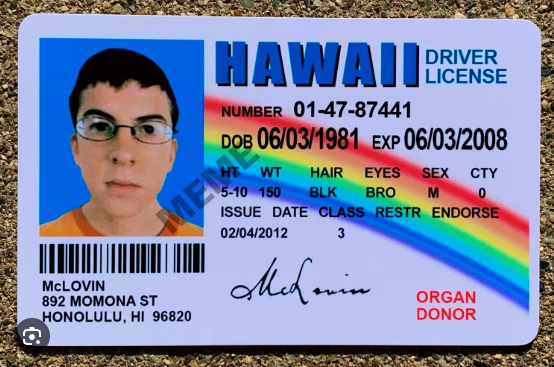

I, Myself also had a hard time when thinking of the relationship of JS to HTML & CSS. but what certainly help me understand their relationship with each other is comparing them to their real world counter parts. sort of.
HTML is the car's frame and Chassis. CSS would be the paint job, body kit, seat covers and dashboard. and JavaScript would be the Engine and the ECU of the car.
Now here HTML would be layout of the shop. the tables and chairs the counter and MENU. CSS would be the interior design of the shop. The LOGO, Curtains, The paint. And JavaScript would be the baristas making Coffee, The cashier and servers.
the most easiest analogy i could think of, HTML would be the skeleton. CSS is our Skin, hair and clothing. and JavaScript would be the Brain and Muscle.
Unlike us humans, when we do a task we already know what is what and which is which. Computers do not. Control flow is the order in which instructions are executed. If Im gonna ask my computer to make me a coffee heres what it would look like
Loops helps us repeat action multiple times. so we dont have to write a code everytime we want to repeat an action. if I want to stri my coffee in JavaScript code it would look like this
Think of DOM as a TREE where the root is the document itself — the webpage. Each node in this tree represents a different element or section of the document. The branches connecting these nodes show relationships, such as parent-child connections.
Arrays are big box that you can fit alot of stuff in. like the image below.
In real-life its basically like a contact card.Each piece of information (name, age, phone number) is paired with a label (the key) that describes the information, and the actual details (MCLOVIN, HAWAII, etc.) are the values.
In JavaScript code it would look something like this.
They are basically a recipe for your favorite egg. Instead of writing down all the steps everytime you want to make one, you write a recipe once and just follow it whenever you want to cook.